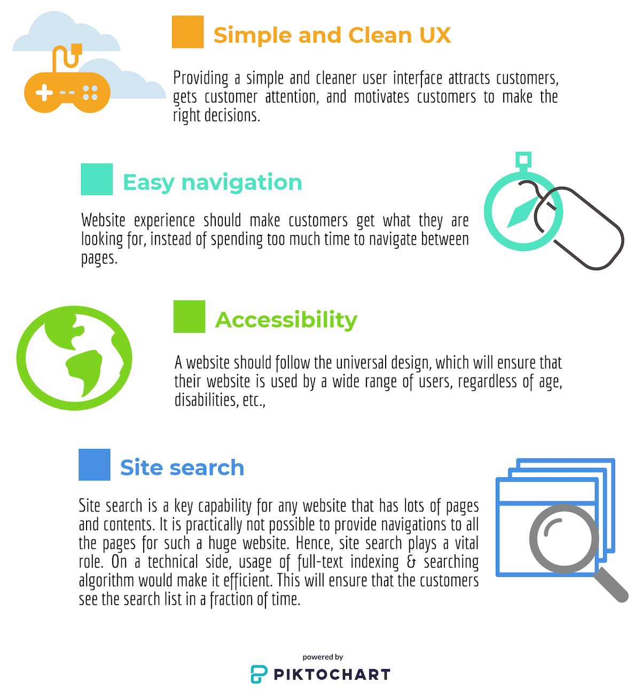
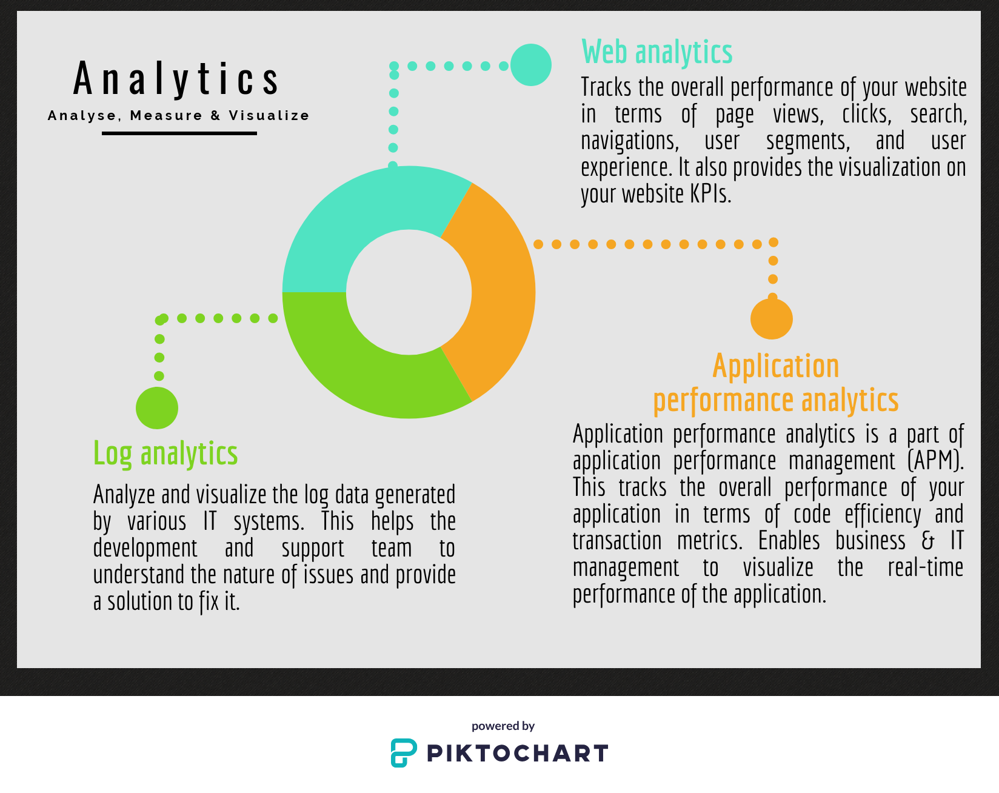

Architecting the digital landscape
Wondering how an enterprise digital ecosystem understand their customers need and target with the right content at the right time?
With the rapid evolution of digitalization, almost every major business has started building their ecosystem to visualize their customer needs and engage them appropriately. In turn, this has improved their customer retention and increased the return on investment. Now the question is how to engineer such a customer-centric web application? Let us start with the website and its interconnected ecosystem to attract, track, recommend and engage customers.
Website
A website or web application is the entry door for any digital business to understand their customer needs and their behaviors. There are many success stories behind every website. Engineering a customer-centric website application starts with enriched user experience to attract and retain their customers.
Analytics
Do you want to get a deeper understanding of your customer and application behavior? Are you interested to visualize the key performance indicators (KPI) and pain points on your websites?
Analytics is the way to go, this would help the business to visualize, track and measure the success. In addition, understanding the pain points would enable the IT team to rethink and redesign the solutions. There is three major analytics behind any website.
Personalization
Personalization on a website means providing tailor-made content to an individual or segment of users. Personalized content would target the right customer with the right content. This will increase the return on investment, enhance the user experience and retain customers. Technically this can be achieved by following few approaches like rule-based personalization, A/B or multivariate testing, using personalized recommendation algorithms.
Digital campaign
A digital campaign is an essential factor in digital marketing. Targeting customers with tailor-made content on omnichannel would ensure more conversion rate than traditional methods. Understanding the end-customer channel preference would enable the business to target the customers with the right content on the right channel instead of broadcasting irrelevant content and spamming. Omni-channel campaigning includes targeting email, mobile notifications, SMS, web portal, social media, and digital ads.
Multichannel fluid experience
Multi-channel fluid experience is building a website that should be compatible with relatively all types of devices like desktops, mobile phones, tablets, and other large screens with different screen sizes. This ensures the reach of web content to the larger audience.
Search engine optimization (SEO)
SEO is a process of increasing the visibility of the website content on most of the search engines. Optimizing the page content would enable the search engine crawler to rank the pages appropriately. Tagging, tuning and referencing the content appropriately would ensure the highest-ranking and make the website to stay on top. Search engine marketing is another trend that gives a higher conversion rate.
For more details, please stay tuned for my upcoming post.
Website search
Website search is a searching mechanism provided to the end-user to search and find the relevant page content without much effort within the website. This can be achieved by enabling the full-text index and search algorithm.
For more details, please stay tuned for my upcoming post.
Performance
Do you want to make your customers fall in love with your websites? Performance is the answer. Higher performance leads to higher customer retention.
The performance of the website is one of the key deciding factors of success. Customer loves to engage with high-performing sites. A statistics data iterates for every one-second delay would increase the user drop count by 7%. Engineering high performing websites would require careful analysis.
Consider the following while enhancing the performance.
- Application-level caching
- Webserver caching of static contents say (HTML, CSS, Javascript, Images, Videos)
- Scaling the servers
- Code tuning
- Content delivery network
A single page application (SPA) is another trending approach by which one can achieve the utmost performance.
For more details, please stay tuned for my upcoming post.
Security
The security of the site is the primary factor in deciding the success of a website. In the era of digitalization, security gained paramount importance. Secured sites always win customers’ confidence. Building a secured website requires a lot of groundwork from each level say application, network, and data.
For more details, please stay tuned for my upcoming post.
Other things to consider
Other factors decide the success of each website are
- Availability
- Reliability of the website
- Social media presence
- Community or forum
- Customer engagement
Conclusion
Timing and targeting the customers with the right content on the right device and providing better user experience with the awareness of customer needs will decide the success in this digital era.